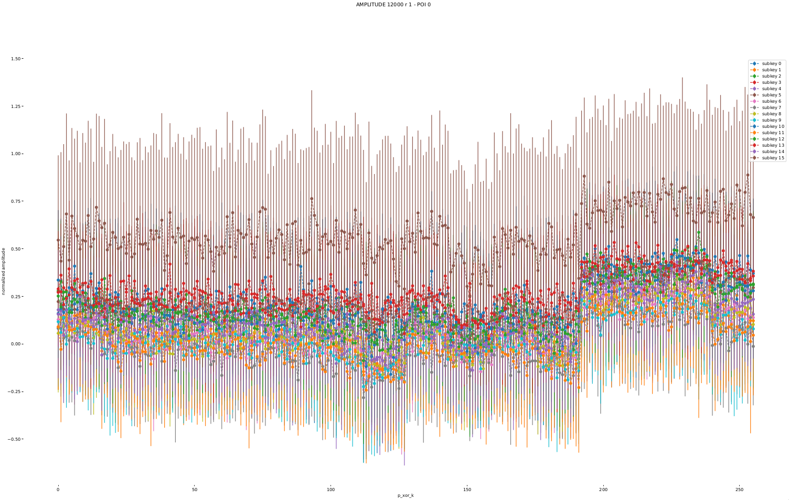

Screaming Channels on Bluetooth Low Energy – ACSAC Artifact Evaluation
Table of Contents
1. Introduction
This guide will help you reproduce the main results of our paper. Note that
this is a small part of our project. The full project can be found on GitHub at
pierreay/screaming_channel_ble. A web version of this guide can also be found
at screaming_channels_ble/docs/demo_20240828_acsac/README.org. We have
published in open-access all of our data in the repository located at
pierreay/screaming_channels_data.
To fully reproduce this attack, one would have to first acquire a dataset by:
- Flashing two firmware (the attacker dongle and the victim board) and installing the radio tooling.
- Setup the experimental setup, including the attacker host computer, the radio, the antenna and amplifiers, the dongle, the victim dongle.
- Performing a dataset collection (up to several days).
- Post-processing the dataset to extract the small AES leak amplitude trace from the large RAW I/Q signal.
As you imagine, this is fairly complex and long without prior experience. Hence, in this guide, we provides two representative pre-processed datasets on which we can complete the second part of the attack. The \(A_x\) refer to the paper notation, while the long name refer to our data repository notation:
- \(A_{7}\)
240207_1-leak-pairing-10cm-anechoic-2.533e9-8e6_raw- \(A_{9}\)
240429_highdist_2lna_highgain_norep
Hence, we uploaded two representative and small datasets on Zenodo:
Ayoub (2024) Screaming Channels on Bluetooth Low Energy, Zenodo. DOI: 10.5281/zenodo.13384278. URL: https://zenodo.org/records/13384278
For both datasets, we will execute the following steps:
- Create a profile (i.e., a template) from a training subset to learn the leakage model.
- Leveraging the profile, attack using a Template Attack on an attack subset.
While it is not mandatory, the docs/demo_20231014/README.org demo give a look
at visualizing how traces and the AES leakage looks like.
2. Setup
First, we will setup necessary tools, downloading the code and the data.
2.1. Download
Clone the "Screaming Channels on Bluetooth Low Energy" repository (~ 10 MB) in the directory of your choice:
git clone https://github.com/pierreay/screaming_channels_ble/
Moreover, manually download the two aforementioned datasets located at
zenodo.org/records/13384278 which have been publicly uploaded on Zenodo (less
than 2 GB).
2.2. Installation
We will setup a temporary Docker container for reproducing the attacks. Ensure that both Docker and its buildx builder are installed.
First, move the downloaded datasets inside the Docker folder:
cd screaming_channels_ble/docs/demo_20240828_acsac
mv -t . /PATH/TO/240207_1-leak-pairing-10cm-anechoic-2.533e9-8e6_raw.tar.bz2
mv -t . /PATH/TO/240429_highdist_2lna_highgain_norep.tar.bz2
Second, download and initialize the Docker image leveraging the Dockerfile:
make build
It will download around 2 GB and decompress the datasets that have been downloaded previously inside the container. The image and containers will be cleaned up at the end, no files will be left or modified on the host system.
If you get an error like the following one:
cp: cannot stat '/host/*.tar.bz2': No such file or directory
It means that the two datasets archives were not moved correctly to the Dockerfile directory and that the Docker container cannot access them.
3. Reproducing the attacks
The Docker is now ready to be use. In the following, we assume that the reader is connected to the Docker container through SSH:
make shell
For the following command, the $SC_SRC variable is set to the path of the
screaming_channels_ble/src directory, while the $DATASET variable will be
set to the path of the currently analyzed dataset.
3.1. Attacking \(A_{7}\)
This dataset correspond to the scenario with the non-instrumented firmware in the anechoic box.
Set the path to the dataset:
export DATASET="/240207_1-leak-pairing-10cm-anechoic-2.533e9-8e6_raw"
First, create the profile:
"${SC_SRC}/attack.py" --dataset-path "${DATASET}" --custom-dtype --plot \ --save-images --norm --comptype AMPLITUDE \ --num-traces 16384 --start-point 1000 --end-point 1500 \ profile --pois-algo r --num-pois 1 --poi-spacing 1 \ --variable p_xor_k --align
Where non-obvious options means:
- –custom-dtype
- Use a custom
dtypeinstead of the default Numpy complexdtype, allowing to save disk space. - –norm
- Normalize the traces after loading.
- –start-point / –end-point
- Truncate the traces between those points.
- –pois-algo
- Use the \(k-\text{fold}\) \(\rho-\text{test}\) to find informative point of interests (PoIs).
- –num-pois
- Use only 1 PoI per subbytes.
- –variable pxork
- Use the \(l = p \oplus k\) leakage variable, with \(p\) the plaintext and \(k\) the key.
At that point, a plot should open (if X11 forwarding is correctly configured
with Docker) and the profile will be stored under ${DATASET}/profile. If no
plot appears, check that the profile has correctly been created by running:
evince ${DATASET}/profile/*.pdf
You should obtains plots similar to the following ones:
We will now attack using the created profile:
"${SC_SRC}"/attack.py --dataset-path "${DATASET}" --custom-dtype --log \ --plot --norm --bruteforce --comptype AMPLITUDE \ --start-point 1000 --end-point 1500 --num-traces 14900 \ attack --attack-algo pcc --profile "${DATASET}/profile" --num-pois 1 \ --poi-spacing 1 --variable p_xor_k --align-attack --align-profile \ --no-align-profile-avg
The options are fairly similar to the previous command, except that we also specify to bruteforce the key at the end, and to re-perform a step of trace alignment. You should see this output:
Best Key Guess: 7c 19 67 e4 41 65 da 6d f5 18 32 f7 c5 f1 13 3e Known Key: 7f 18 67 e6 42 65 da 6f f5 1b 32 f4 c6 f3 10 3e PGE: 002 001 000 003 001 000 000 003 000 003 000 003 002 002 001 000 HD: 002 001 000 001 002 000 000 001 000 002 000 002 002 001 002 000 SUCCESS: 0 0 1 0 0 1 1 0 1 0 1 0 0 0 0 1 CORRECT BYTES: 6 PGE MEAN: 1 PGE MEDIAN: 1 PGE MAX: 3 HD SUM: 16 Starting key ranking using HEL results rank estimation nb_bins = 512 merge = 2 Starting preprocessing Clearing memory min: 2^33.79125918 actual rounded: 2^34.59872304 max: 2^35.23080812 time enum: 0.343729 seconds
Which means that this attack leads to an estimated key rank of \(2^{34}\), just as \(A_{7}\) in the paper.
With the additional bruteforce, which took 1,5 hours running natively on my desktop computer but a little more inside the Docker container, you should obtain:
Starting key enumeration using HEL Assuming that we know two plaintext/ciphertext pairs [...] Starting preprocessing current rank : 2^2.584962501 current rank : 2^4.459431619 [...] current rank : 2^33.13069245 current rank : 2^34.11663176 KEY FOUND!!! 7f 18 67 e6 42 65 da 6f f5 1b 32 f4 c6 f3 10 3e
Which means we break the entire key!
3.2. Attacking \(A_{9}\)
This dataset correspond to the scenario with the non-instrumented firmware at a distance of 1.2 meter in an office environment. Since the steps are similar to the previous attack, we will not detail the commands and options.
First, create the profile:
export DATASET="/240429_highdist_2lna_highgain_norep/raw"
"${SC_SRC}/attack.py" --dataset-path "${DATASET}" --custom-dtype --plot \ --save-images --norm --comptype AMPLITUDE \ --num-traces 12000 --start-point 1100 --end-point 1650 \ profile --pois-algo r --num-pois 1 --poi-spacing 1 \ --variable p_xor_k --align
evince ${DATASET}/profile/*.pdf
You should obtains plots similar to the following ones:


Then, attack using the created profile:
"${SC_SRC}"/attack.py --dataset-path "${DATASET}" --custom-dtype --log \ --plot --norm --no-bruteforce --comptype AMPLITUDE \ --start-point 1020 --end-point 1570 --num-traces 40000 \ attack --attack-algo pcc --profile "${DATASET}/profile" --num-pois 1 \ --poi-spacing 1 --variable p_xor_k --align-attack --align-profile \ --no-align-profile-avg
You should see this output:
Best Key Guess: a3 e3 69 9c a9 2a 3f 46 f4 5f 11 5c 78 80 a6 4f Known Key: ad ef 6d 92 a8 29 32 40 f4 56 17 52 79 8d a6 46 PGE: 006 001 014 005 002 005 008 010 000 007 011 003 006 004 000 010 HD: 003 002 001 003 001 002 003 002 000 002 002 003 001 003 000 002 SUCCESS: 0 0 0 0 0 0 0 0 1 0 0 0 0 0 1 0 CORRECT BYTES: 2 PGE MEAN: 5 PGE MEDIAN: 5 PGE MAX: 14 HD SUM: 30 Starting key ranking using HEL results rank estimation nb_bins = 512 merge = 2 Starting preprocessing Clearing memory min: 2^55.02283544 actual rounded: 2^60.13102936 max: 2^62.56824053 time enum: 0.196843 seconds
Which means that this attack leads to an estimated key rank of \(2^{60}\), just as \(A_{9}\) in the paper.
4. Clean
Finally, once the Docker container is exited, one may run the following to clean the image:
make clean
5. Conclusion
In this demonstration, we reproduced the two most important results of the paper regarding attack performances. All other claims can also be reproduced by leveraging our full dataset repository, including scripts and data. Regarding the protocol manipulation part of the attack, a better solution would be to have an online platform allowing to replicate and extend such attacks. We are looking into this as future work.